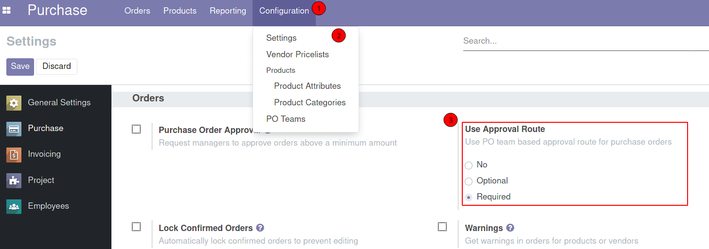
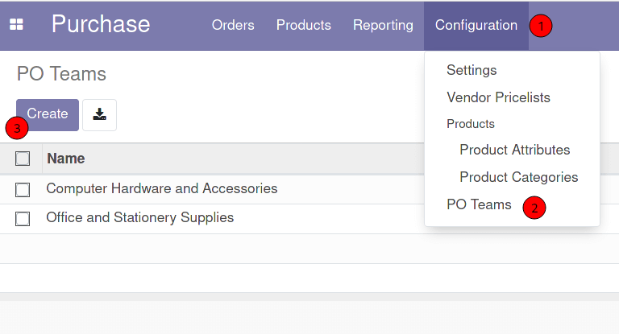
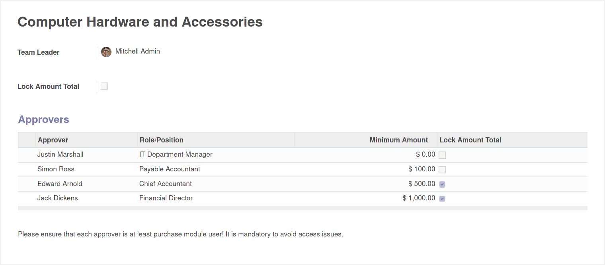
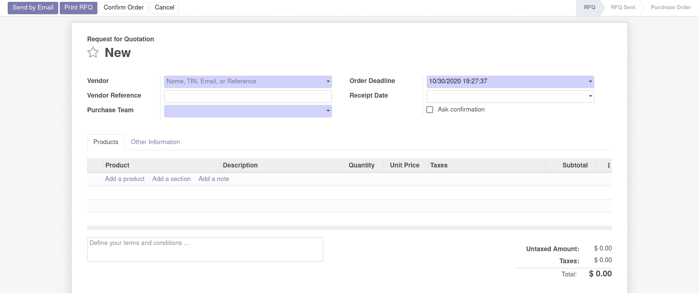
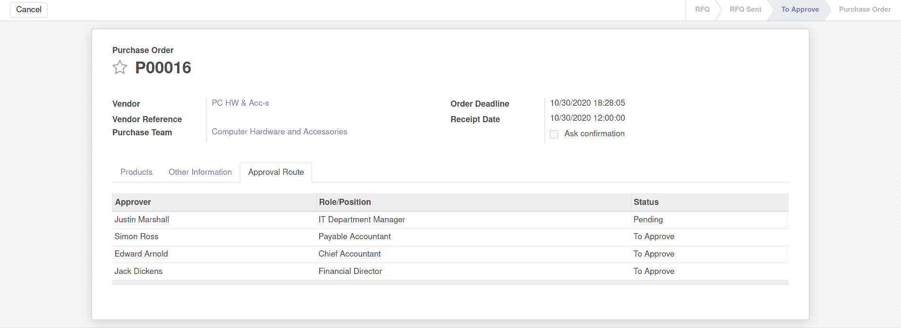
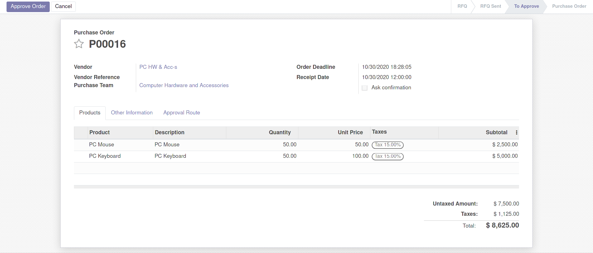
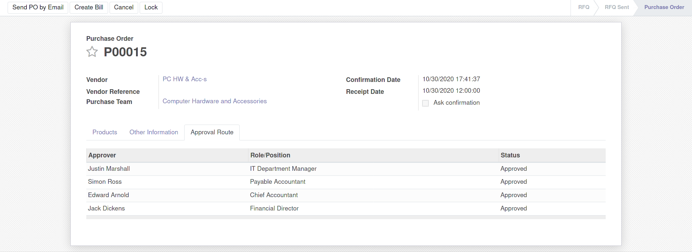

How it works:
After module installation new settings block will be displayed:

- No - approval route functionality disabled.
- Optional - approval route can be used based PO initiator (Purchase Representative) choise.
- Required - approval route is required. It means user should select PO Team on create RFQ.
Each Administrator of the Purchase Module has access to create and manage own Purchase Team.

The form looks like in the screenshot below:
Enter name of the team, select team leader and add approvers

Fields information
Team Leader is the Purchase Module Administrator who is allowed to manage own purchase team.
If Lock Amount Total checkbox is enabled the system prevents updating order lines after
confirming
order.
As Approver can be selected any User of the Purchase Module. Also you should enter Role/Position
of the
Approver. If information is available, system will try to set approver’s Job Title or Job Position
in
this field.
Also you can set Minimum Amount for which a validation by Approver is required.
If 0 - approver should approve each order. On confirming order the system generates approval route
using
Total value of PO and Minimum Amount for Approver. If Total less than Minimum Amount Approver will
be
skipped for this PO.
Also you can enable the option Lock Amount Total. If this checkbox is enabled user can not
update
order
lines after received approval. An error will be triggered if the system detects a change in the
Total.

Purchase Order Form:

After creating PO user clicks the "Confirm" button. After that a request to approve to the first approver will be sent:

Pending - is the status for current approver
Only current approver can see the "Approve" button:

Each approver will be requested to approve PO step by step. After the last approval PO is moving to the "Purchase Order" state and approval route is closing.

Video: 2 cases of using approval route to purchase PC accessories:
- case 1: purchase order for a small amount
- case 2: purchase order for a large amount